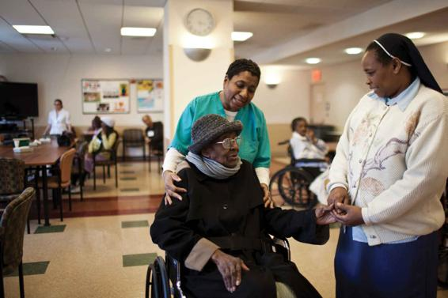

The prevalence of chronic disabilities among older adults has declined in recent years, and most older people rate their health as reasonably good and free of major disabilities. Still, older people obviously suffer from more health problems than most younger people, and the number and intrusiveness of health difficulties often increase with advancing age. Of adults 75 and older, more than half suffer from arthritis and about a third from heart disease (35 percent) and cancer (32 percent); hypertension is the most frequently occurring condition, afflicting 72 percent of men age 75 and over and 80 percent of women 75 and over (AOA, 2017).
More than three-quarters (82 percent) of older adults between the ages of 65 and 74 consider their health to be “excellent,” “very good,” or “good”; about three out of four adults 75 and older reported the same (Graham, 2019). It is not surprising that the percentage of people needing help with personal care increases with age: Only 4 percent of adults between the ages of 65 and 74 report needing help with personal care, yet this figure rises to 9 percent for people between 75 and 84 and to 20 percent for people over 85 (Administration for Community Living, 2018).
The oldest old, or persons ages 85+, make up the fastest-growing group of older adults. Because advanced old age is associated with greater use of health care, an aging population is accompanied by rising health-care expenditures. Medicare expenditures, or public health-care expenditures, on retirement-age older adults increase with age; per capita spending for older adults in 2011 was more than twice as high among persons age 96 ($16,145) versus age 70 ($7,566). This increase is due in large part to the high costs of medical care at the end of life (Neuman et al., 2015).
An alternative to nursing homes, PACE (Programs for All-Inclusive Care for the Elderly) is a Medicare program that allows older adults to stay in their homes while receiving the care they need.
Evidence suggests that the most disadvantaged members of the baby boom cohort may fare particularly poorly as they reach later life; a recent analysis of National Health and Nutrition Examination Survey data shows that persons between 60 and 69 are more disabled than prior generations of young old adults (Seeman et al., 2009); the authors attribute this increase to rising rates of obesity among young and middle-aged Americans, especially Blacks and Latinos. According to the Administration for Community Living (2018), more than twice as many (44.3 percent) of people 75 years and older report having difficulty in physical functioning as those 45 to 64 years of age (19.7 percent).
Health insurance is essential for older adults, given the high and rising costs of medical care. Almost all (93 percent) older Americans are covered to some extent by Medicare. But because Medicare covers about half the total health care expenses of older adults, half of older adults supplement this coverage with private insurance. The rising costs of private insurance, unfortunately, have made this option impossible for a growing number of older adults. In 2016, older adults spent an average of $5,994 on out-of-pocket health care expenditures—an increase of 38% since 2006. Despite Medicare, health care costs still comprise 13.1 percent of older adults’ total expenses (Administration for Community Living, 2018).
When older adults become physically unable to care for themselves, they may move into assisted-living facilities, long-term care facilities, or nursing homes. Only 3 percent of the 65+ population in 2015 lived in institutional settings such as nursing homes; however, this percentage increases dramatically with age. While only 1 percent of older adults ages 65 to 74 and 3 percent of adults ages 75 to 84 live in institutional settings, 9 percent of older adults ages 85+ do (AOA, 2017).
The average cost of a semiprivate room in a nursing home is now over $82,000 a year, while the annual cost of a room at an assisted-living facility averages $43,500 (Genworth Financial, 2016). As a result of these high costs, many reasonably well-off older adults who require such institutionalization may see their lifetime savings quickly depleted (a process dubbed “spending down”). Some receive Medicaid coverage; Medicaid is the government program that provides health insurance for the poor. It covers long-term supervision and nursing costs, although only when most of one’s assets (except for one’s home) have been used up.
Nursing homes have long had a reputation for austerity and loneliness. Living in a nursing home was cited as a concern about growing old by over half of respondents, according to a survey (Table 12.2). However, the quality of care in most homes has improved in recent years because federal programs such as Medicaid help cover the cost of care and because of federal quality regulations. Further, long-term care offers diverse options to older adults, ranging from apartments with partial nursing care and meals to units that provide round-the-clock medical assistance. Many also offer a wide array of cultural, social, and recreational programs for their residents.
Table 12.2WHAT IS YOUR BIGGEST FEAR ABOUT GROWING OLD?
When it comes to growing old, most Americans fear losing their health and independence far more than being alone or living in a nursing home.
Losing memory
73%
Losing your health
72%
Running out of money
65%
Losing ability to care for yourself
62%
Winding up in a nursing home
59%
SOURCE: NORC at the University of Chicago, 2017.
However, the reputation of nursing homes and long-term care facilities was tarnished in 2020, as they were the seat of many COVID-19 outbreaks. However, these outbreaks were not a function of low-quality care or facilities. Rather, viruses spread rapidly in congregate housing, especially when the residents already had compromised health. Nursing home staff, many of whom lived in crowded homes or who relied on public transit, were at particular risk of not only contracting the virus, but bringing it to the homes in which they work (Barnett and Grabowski, 2020). As a result, the future of nursing homes and Americans’ faith in them is uncertain.